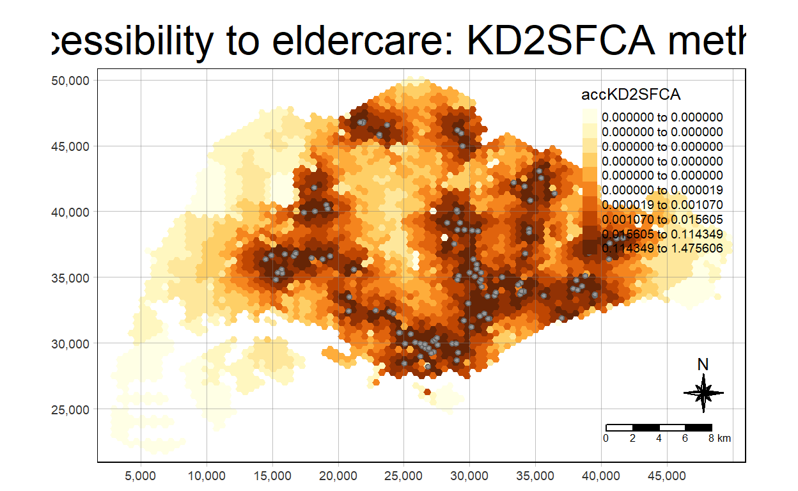

In Hands-on Exercise 11, I have learnt how to model geographical accessibility using R Packages.
In this hands-on exercise, I have gain hands-on experience on how to model geographical accessibility by using R’s geospatial analysis packages.
Four data sets will be used in this hands-on exercise, they are:
MP14_SUBZONE_NO_SEA_PL: URA Master Plan 2014 subzone boundary GIS data. This data set is downloaded from data.gov.sg.
hexagons: A 250m radius hexagons GIS data. This data set was created by using st_make_grid() of sf package. It is in ESRI shapefile format.
ELDERCARE: GIS data showing location of eldercare service. This data is downloaded from data.gov.sg. There are two versions. One in ESRI shapefile format. The other one in Google kml file format. For the purpose of this hands-on exercise, ESRI shapefile format is provided.
OD_Matrix: a distance matrix in csv format. There are six fields in the data file. They are:
The R packages need for this exercise are as follows:
Spatial data handling
Modelling geographical accessibility
Attribute data handling
thematic mapping
Staistical graphic
Statistical analysis
packages = c('tmap', 'SpatialAcc',
'sf', 'ggstatsplot', 'reshape2',
'tidyverse')
for(p in packages){
if(!require(p, character.only = T)){
install.packages(p)
}
library(p, character.only = T)
}
Notice that with tidyverse, it also installs other R packages such as readr, dplyr and ggplots, tidyr, stringr, forcats, tibble, purrr and magrittr packages.
mpsz <- st_read(dsn = "data/geospatial", layer = "MP14_SUBZONE_NO_SEA_PL")
Reading layer `MP14_SUBZONE_NO_SEA_PL' from data source
`C:\wlwong2018\IS415 Blog\_posts\2021-10-30-hands-on-exercise-11\data\geospatial'
using driver `ESRI Shapefile'
Simple feature collection with 323 features and 15 fields
Geometry type: MULTIPOLYGON
Dimension: XY
Bounding box: xmin: 2667.538 ymin: 15748.72 xmax: 56396.44 ymax: 50256.33
Projected CRS: SVY21hexagons <- st_read(dsn = "data/geospatial", layer = "hexagons")
Reading layer `hexagons' from data source
`C:\wlwong2018\IS415 Blog\_posts\2021-10-30-hands-on-exercise-11\data\geospatial'
using driver `ESRI Shapefile'
Simple feature collection with 3125 features and 6 fields
Geometry type: POLYGON
Dimension: XY
Bounding box: xmin: 2667.538 ymin: 21506.33 xmax: 50010.26 ymax: 50256.33
Projected CRS: SVY21 / Singapore TMeldercare <- st_read(dsn = "data/geospatial", layer = "ELDERCARE")
Reading layer `ELDERCARE' from data source
`C:\wlwong2018\IS415 Blog\_posts\2021-10-30-hands-on-exercise-11\data\geospatial'
using driver `ESRI Shapefile'
Simple feature collection with 120 features and 19 fields
Geometry type: POINT
Dimension: XY
Bounding box: xmin: 14481.92 ymin: 28218.43 xmax: 41665.14 ymax: 46804.9
Projected CRS: SVY21 / Singapore TMmpsz <- st_transform(mpsz, 3414)
eldercare <- st_transform(eldercare, 3414)
hexagons <- st_transform(hexagons, 3414)
st_crs(mpsz)
Coordinate Reference System:
User input: EPSG:3414
wkt:
PROJCRS["SVY21 / Singapore TM",
BASEGEOGCRS["SVY21",
DATUM["SVY21",
ELLIPSOID["WGS 84",6378137,298.257223563,
LENGTHUNIT["metre",1]]],
PRIMEM["Greenwich",0,
ANGLEUNIT["degree",0.0174532925199433]],
ID["EPSG",4757]],
CONVERSION["Singapore Transverse Mercator",
METHOD["Transverse Mercator",
ID["EPSG",9807]],
PARAMETER["Latitude of natural origin",1.36666666666667,
ANGLEUNIT["degree",0.0174532925199433],
ID["EPSG",8801]],
PARAMETER["Longitude of natural origin",103.833333333333,
ANGLEUNIT["degree",0.0174532925199433],
ID["EPSG",8802]],
PARAMETER["Scale factor at natural origin",1,
SCALEUNIT["unity",1],
ID["EPSG",8805]],
PARAMETER["False easting",28001.642,
LENGTHUNIT["metre",1],
ID["EPSG",8806]],
PARAMETER["False northing",38744.572,
LENGTHUNIT["metre",1],
ID["EPSG",8807]]],
CS[Cartesian,2],
AXIS["northing (N)",north,
ORDER[1],
LENGTHUNIT["metre",1]],
AXIS["easting (E)",east,
ORDER[2],
LENGTHUNIT["metre",1]],
USAGE[
SCOPE["Cadastre, engineering survey, topographic mapping."],
AREA["Singapore - onshore and offshore."],
BBOX[1.13,103.59,1.47,104.07]],
ID["EPSG",3414]]eldercare <- eldercare %>%
select(fid, ADDRESSPOS) %>%
mutate(capacity = 100)
hexagons <- hexagons %>%
select(fid) %>%
mutate(demand = 100)
ODMatrix <- read_csv("data/aspatial/OD_Matrix.csv", skip = 0)
distmat_km<-as.matrix(distmat/1000)
acc_Hansen <- data.frame(ac(hexagons$demand, # hexcen$demand
eldercare$capacity,
distmat_km,
d0 = 50,
power = 2,
family = "Hansen"))
colnames(acc_Hansen) <- "accHansen"
acc_Hansen <- tbl_df(acc_Hansen)
hexagon_Hansen <- bind_cols(hexagons, acc_Hansen)
acc_Hansen <- data.frame(ac(hexagons$demand,
eldercare$capacity,
distmat_km,
d0 = 50,
power = 2,
family = "Hansen"))
colnames(acc_Hansen) <- "accHansen"
acc_Hansen <- tbl_df(acc_Hansen)
hexagon_Hansen <- bind_cols(hexagons, acc_Hansen)
mapex <- st_bbox(hexagons) #view extent
tmap_mode("plot")
tm_shape(hexagon_Hansen,
bbox = mapex) +
tm_fill(col = "accHansen",
n = 10,
style = "quantile",
border.col = "black",
border.lwd = 1) +
tm_shape(eldercare) +
tm_symbols(size = 0.1) +
tm_layout(main.title = "Accessibility to eldercare: Hansen method",
main.title.position = "center",
main.title.size = 2,
legend.outside = FALSE,
legend.height = 0.45,
legend.width = 3.0,
legend.format = list(digits = 6),
legend.position = c("right", "top"),
frame = TRUE) +
tm_compass(type="8star", size = 2) +
tm_scale_bar(width = 0.15) +
tm_grid(lwd = 0.1, alpha = 0.5)
In this section, we are going to compare the distribution of Hansen’s accessibility values by URA Planning Region.
hexagon_Hansen <- st_join(hexagon_Hansen, mpsz,
join = st_intersects)
ggplot(data=hexagon_Hansen,
aes(y = log(accHansen),
x= REGION_N)) +
geom_boxplot() +
geom_point(stat="summary",
fun.y="mean",
colour ="red",
size=2)
acc_KD2SFCA <- data.frame(ac(hexagons$demand,
eldercare$capacity,
distmat_km,
d0 = 50,
power = 2,
family = "KD2SFCA"))
colnames(acc_KD2SFCA) <- "accKD2SFCA"
acc_KD2SFCA <- tbl_df(acc_KD2SFCA)
hexagon_KD2SFCA <- bind_cols(hexagons, acc_KD2SFCA)
tmap_mode("plot")
tm_shape(hexagon_KD2SFCA,
bbox = mapex) +
tm_fill(col = "accKD2SFCA",
n = 10,
style = "quantile",
border.col = "black",
border.lwd = 1) +
tm_shape(eldercare) +
tm_symbols(size = 0.1) +
tm_layout(main.title = "Accessibility to eldercare: KD2SFCA method",
main.title.position = "center",
main.title.size = 2,
legend.outside = FALSE,
legend.height = 0.45,
legend.width = 3.0,
legend.format = list(digits = 6),
legend.position = c("right", "top"),
frame = TRUE) +
tm_compass(type="8star", size = 2) +
tm_scale_bar(width = 0.15) +
tm_grid(lwd = 0.1, alpha = 0.5)

Now, we are going to compare the distribution of KD2CFA accessibility values by URA Planning Region.
hexagon_KD2SFCA <- st_join(hexagon_KD2SFCA, mpsz,
join = st_intersects)
ggplot(data=hexagon_KD2SFCA,
aes(y = accKD2SFCA,
x= REGION_N)) +
geom_boxplot() +
geom_point(stat="summary",
fun.y="mean",
colour ="red",
size=2)
acc_SAM <- data.frame(ac(hexagons$demand,
eldercare$capacity,
distmat_km,
d0 = 50,
power = 2,
family = "SAM"))
colnames(acc_SAM) <- "accSAM"
acc_SAM <- tbl_df(acc_SAM)
hexagon_SAM <- bind_cols(hexagons, acc_SAM)
tmap_mode("plot")
tm_shape(hexagon_SAM,
bbox = mapex) +
tm_fill(col = "accSAM",
n = 10,
style = "quantile",
border.col = "black",
border.lwd = 1) +
tm_shape(eldercare) +
tm_symbols(size = 0.1) +
tm_layout(main.title = "Accessibility to eldercare: SAM method",
main.title.position = "center",
main.title.size = 2,
legend.outside = FALSE,
legend.height = 0.45,
legend.width = 3.0,
legend.format = list(digits = 3),
legend.position = c("right", "top"),
frame = TRUE) +
tm_compass(type="8star", size = 2) +
tm_scale_bar(width = 0.15) +
tm_grid(lwd = 0.1, alpha = 0.5)
Now, we are going to compare the distribution of SAM accessibility values by URA Planning Region.
hexagon_SAM <- st_join(hexagon_SAM, mpsz,
join = st_intersects)
ggplot(data=hexagon_SAM,
aes(y = accSAM,
x= REGION_N)) +
geom_boxplot() +
geom_point(stat="summary",
fun.y="mean",
colour ="red",
size=2)